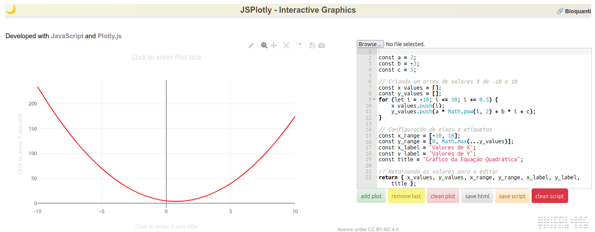

1. No installation required;
2. No additional requirements (e.g., ".NET Microsoft" or "Java" libraries);
3. No network connection required;
4. No minimum machine performance requirements (e.g., RAM);
5. Can be loaded from a simple HTML viewer ("Firefox," "Edge," "Safari," "Chrome");
6. Does not require a specific editor for construction, and can be created from a simple notepad;
7. Source code and product are contained in the same file, facilitating storage and sharing;
8. Can be loaded from a computer, mobile devices (smartphones), or removable devices (USB sticks);
9. Is interpreted from simple text code, using negligible physical memory (20kB), while allowing the creation of sophisticated, interactive, and dynamic graphics (updated by user event or in real time);
10. Because it can be built in a simple text editor, its source code can be shared without restriction;
11. It can produce interactive 2D and 3D graphics instantly, both from equations and from data entered by the user;
12. It can produce interactive maps, extending its use to non-mathematical applications;
13. It correlates directly to the use of programming languages, as required by the "4th and 5th Industrial Revolutions," and respectively mirrored in the digital skills of "Education 4.0 and 5.0";
14. Due to its simplicity as a single HTML file, it can be incorporated into web pages or virtual environments, allowing its use for any type of teaching-learning modality (e.g., face-to-face, hybrid, remote, distance learning);
15. It fits into the concepts of "reproducible research" as well as "reproducible teaching," underpinned by open, facilitated, and documented access and sharing for digital tools aimed at scientific content, as well as curriculum matrices;
16. Allows other JavaScript libraries to be incorporated into the source code, complementary to graphics production and management (e.g., numjs for numerical computation and linear algebra, jsmath for complex mathematical notation, jStat for statistical computation);
18. It has several interactive actions that can be performed with mouse clicks, adding a playful element to the experimentation of mathematical functions;
19. Renders graphics using a modern and widely used programming language, which also allows learners to gradually learn programming techniques contained in other common languages (Python, R) and the geek world (Arduino - C/C++).
20. It can be freely edited and shared for specific purposes under the Creative Commons CC BY-NC 4.0 license.JSPlotly and Interactive Simulation
JSPlotly is an application for creating interactive and dynamic graphs for simulating natural phenomena based on equations and data visualization. Its name comes from the main language used in its construction and for the production of graphics, JavaScript, as well as the library involved in it, Plotly.js.
The application aims to contribute to the use of computational thinking and programming logic involved in the creation of interactive graphics and maps sought after in Education 4.0, and directly applied to basic and higher education curriculum content (simulations and virtual experiments), as well as scientific research (data visualization and analysis). As the application provides the opportunity to use an AI tool for code generation GSPlotly, it also assists in learning a modern programming language used in building websites and interactive materials (JavaScript). In addition, as it is freely distributed under a Creative Commons CC BY-NC 4.0 license, it can also be customized in any text editor, adding complementary learning in HTML and CSS.
1 Presention Video for JSPlotly
Here is a short video presentation of JSPlotly and GSPlotly (code generator), highlighting some of its features.
JSPlotly allows the reproduction, modification, creation, and sharing of interactive 2D or 3D graphics and dashboards, along with their code. It was designed as a simple, fast, open, playful, reproducible, and shareable alternative for teaching, learning, and research.
It promotes literacy and appropriation for scientific expressions involved in natural phenomena, through visualization resulting from parametric manipulation of the simulation. The application is less than 20 kB, can be customized in a text editor, does not require a connection, runs on any operating system, and for both desktops and mobile devices, exports the graph while preserving its interactivity, and allows insertion into web pages.

JSPlotly was designed with the goal of making it as easy as possible to build and share interactive graphs for teaching, learning, and research. Graphs are present in virtually any natural science or mathematics textbook or content, and are one of the most accurate ways to communicate data and natural behaviors. In particular, graphs allow such behavior to be modeled by simulating a phenomenon based on the equation that describes it.
With the mathematical function that describes this behavior, it is possible to simulate it based on the parameters and variables that compose it and, just as importantly, observe its behavior when these values are changed. This adds unique value to the technical and scientific content presented by the graph when parametric manipulation is allowed 1.
2 Features of JSPlotly
The program has several features found in many others on the market, as well as some abilities that distinguish it from them, namely:
3 Use and features of JSPlotly
The application is intuitive, with an interface consisting of a single window divided between a code editor and the graphics screen. Below the editor are self-explanatory buttons that allow you to:
1. Add a graph ("add plot");
2. Remove the last graph ("remove last");
3. Clear the graph area ("clean plot");
4. Save the graph in interactive format ("save HTML");
5. Save the code ("save script");
6. Clear the editor ("clean script")Below is an image of the program’s opening screen (the only one, too!)

At the top are standard icons for Plotly.js graphical output. However, when producing the application’s default graph, four more specific icons appear. From right to left:
1. Icon for changing the color of the curve ("change color");
2. Icon for optional storage of the figure ("PNG or SVG");
3. Icon for viewing dotted lines of the
data coordinates ("Toggle Spike Lines");
4. Icon for modifying the graph in the developer's own online editor ("Edit in Chart Studio")
In order to make the tool interactive, the following features have been added:
1. Cartesian axis scrolling (right or left);
2. Graph zoom in or out using the
middle mouse button;
3. Graph axis labeling by simply clicking on the titles;
4. Optional dark mode (upper left corner).3.1 Details
As a fusion of the “JavaScript” language with its “Plotly.js” graphics library, the program has several features common to these for building an interactive graph, as well as many others, including:
1. Visual zoom in/out effect 1. general or specific area ("zoom");
2. Drag the display screen ("pan", panoramic view);
3. Individual axis displacement;
4. Return to original configuration ("reset");
5. Selection of individual or collective data/points by ("box" or "lasso");
6. Information on mouse hover ("hover" or "mouse over"; e.g., dynamic display of values);
7. Customizable tool tips ("tooltips");
8. Interactive captions;
9. Dynamic graphics (automatic streaming updates);
10. Detailed navigation ("drill1.down"; exploration in specific area);
11. Custom buttons ("buttons");
12. Custom events by mouse or user action ("callbacks", page update by interaction);
13. Sliders and menus for filtering information;
14. Data marking with dotted lines on the graph axes and "hover" ("Toggle Spike Lines");
15. Icon menu for standard interactivity ("Mode bar");
16. Customization of the "Mode bar" (e.g., exporting the image in SVG, copying data from the graph to the clipboard);
17. Layout animations or data transitions;
18. Interactive facets (side-by-side graphs);
19. Synchronization between interconnected graphs (zoom and data selection);
20. Creation of interactive dynamic dashboards;
21. Integration with interactive libraries ("D3.js" and "React.js") or analytics (e.g., "numjs," "mathjs," "jstat").
In addition, given the peculiarities of the language and library, it also allows:
1. Observe the syntax of the "Plotly.js" library through a predefined equation when loading the application's HTML file ("quadratic function");
2. Load a new function for plotting ("browser");
3. Edit equation parameters, both for the mathematical function and the variables entered, as well as the plot configuration;
4. Plot the graph ("Add Plot") and observe its data interactively by hovering the mouse over it;
6. Change some information in the editor (e.g., variables, parameters, mathematical function, axes) and superimpose a new graph to view the proposed differences and study the behavior of the function ("Add Plot");
6. Change the color of the last plot by simply clicking on the icon ("change color") in the toolbar;
7. Delete the last equation from the graph area ("Remove Last") for further adjustments and superimposition of another curve;
8. Clear the graph area ("Clean Plot");
9. Save the graph as a standalone HTML file ("self-contained"), preserving the interactivity of the "Plotly.js" library for further study or sharing of the represented graph(s) ("Save Plot");
10. Save the equation as a "JavaScript" and "Plotly.js" script for later loading or sharing ("Save Script");
11. Save the plot alternatively as PNG (rasterized - web, documents) or SVG (vector - publication quality, editing) by clicking on the bar icon;
12. Delete all graphic and script elements for a new edition ("Clean All");
13. Undo/redo in unlimited levels for graph editing commands;
14. Insert a coordinate cursor as a dotted line on the graph ("Toggle Spike Lines") using the toolbar icon;
15. Auto-scale the graph by clicking on the bar icon ("Autoscale") or by double-clicking on the screen;
16. Move the graph on the screen by clicking on the bar icon ("Pan");
17. Zoom in on any rectangular area on the graph by clicking on the bar icon ("Zoom");
18. Move the "x" or "y" axis by dragging the mouse;
19. Zoom in or out on the graph using the mouse scroll wheel;
20. Insert labels for the title and axes by simply clicking on the respective areas of the graph;
21. Click on the legend to hide/show each line/data in the graph;
22. Choose between light/dark view (moon/sun icon);
23. Edit the graph in the web application [Plotly Chart Studio](https://chart-studio.plotly.com/create/#/)
from the library developer via the toolbar icon ("Edit in Chart Studio").
4 Download
5 Using JSPlotly on the Bioquanti website
1. Select the option for graphs related to "Biochemistry" or "Basic Education" in the side menu;
2. Choose a topic of interest and click on the graph to view the application. A new window will open containing the "JSPlotly" specific to the chosen theme;
4. Now just click on "Add Plot" to view the graph and test the various possibilities for interactivity;
5. Follow the suggestions in the "Table" for the best use of the chosen theme.Notas de rodapé
Schneedorf, J.M. JSPlotly: an application for interactive graphics in Biochemistry for HTML viewers. Journal of Biochemistry Teaching. 2025 (in press).↩︎